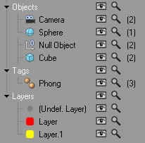

Function available in CINEMA 4D Prime, Visualize, Broadcast, Studio & BodyPaint 3D
Show Filter

Makes the filter appear. Unlike the search bar (which filters item names), the filter controls which types of item are visible in the Object Manager. Being purely a display filter, the filter hides objects in the Object Manager only. The hidden items still exist in the scene and the filter has no effect on whether items are rendered.
The filter is especially useful when you are working with items of a certain type and you don't want other items getting in the way. For example, if you're lighting your scene, you won't necessarily want the 673 polygon objects to be displayed. With the filter, you can concentrate on the essentials.
The left side of the filter lists the various types of item present in the scene, arranged as a tree. Under the types you'll find the specific items that exist in the scene, including the number and selected number of each type. For example, in the case of the picture above, there are two cameras, one of which is currently selected.
There are two switches next to each type of item:
- Eye: Object Manager visibility.
- Magnify: Should the search bar (filtering by item names) take this type of item into account when filtering? If the Magnify icon is disabled, all corresponding items are filtered out and are NOT displayed.
You can use the following hotkeys with the icons within the lists for Objects, Tags and Layers:
- Alt: Disables the icon you click on within an element group and enables all others. If an element type icon is clicked on, all sub-elements will be disabled.
- Ctrl: Enables the icon you click on within an element group and disables all others. If an element type icon is clicked on, all sub-elements will be enabled.
The last type of filter item is Layers, which contains a list of all layers used in the scene. Unused layers are not shown. In the Layers list you'll also find Undef. Layer. Strictly speaking, this isn't a layer. It contains all items not explicitly assigned to a layer.
The filter area can also be used as a selection tool with which certain object and tag types can be selected. To do so:
- Right-click on an element type (or on objects or tags) and select Select All xxxx or Deselect All xxxx. All elements of the type selected will be added to or removed from the current selection.
- Double-click on an element type to select all elements of that type. Simultaneously press the Ctrl-key to add these elements to a current selection; simultaneously press the Alt-key to remove these elements from the current selection.